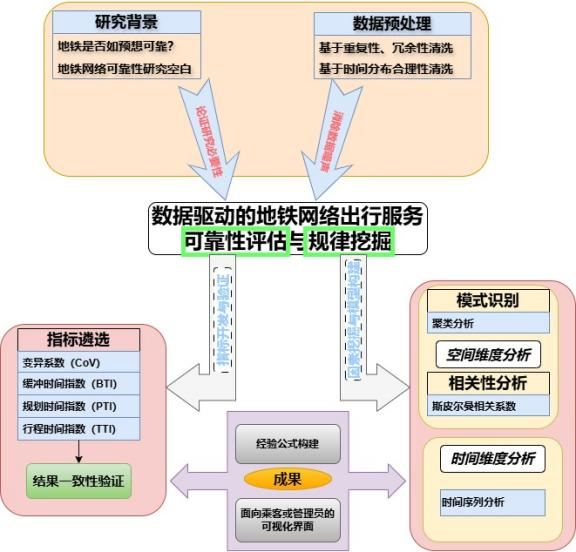
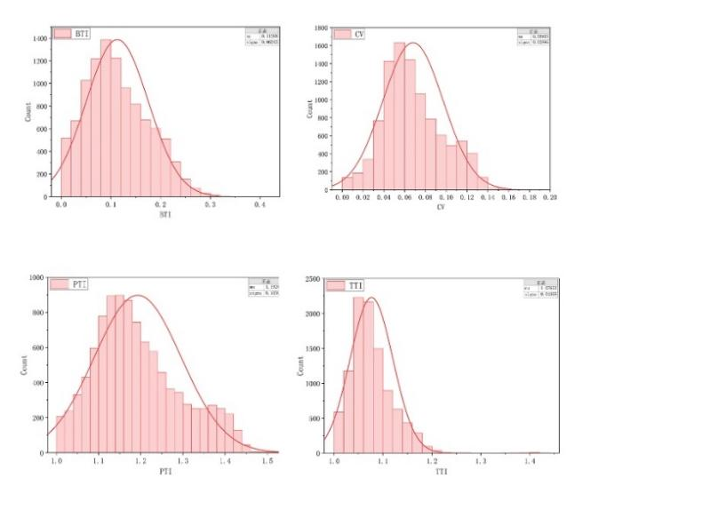
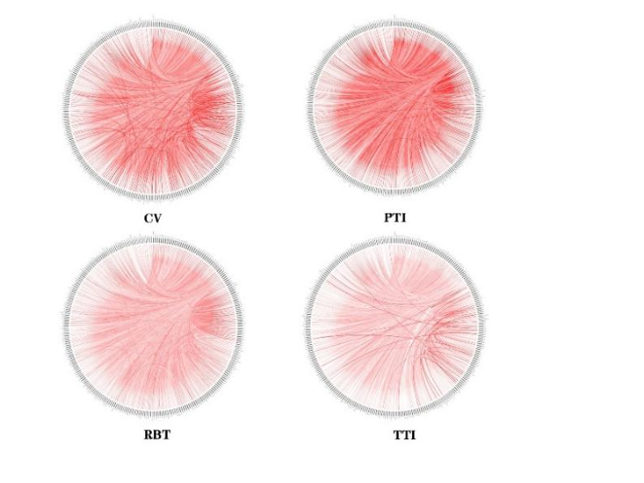
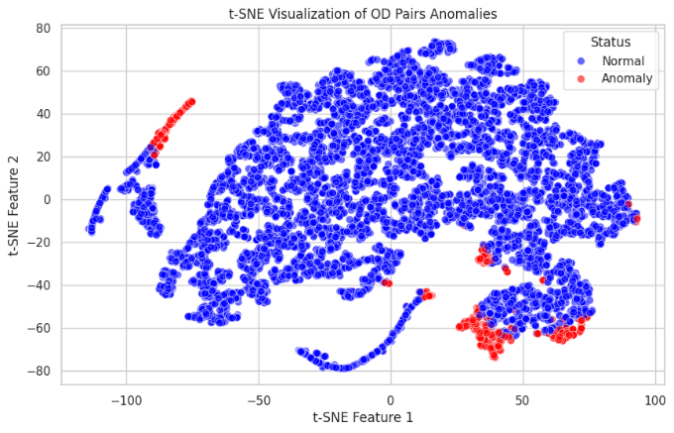
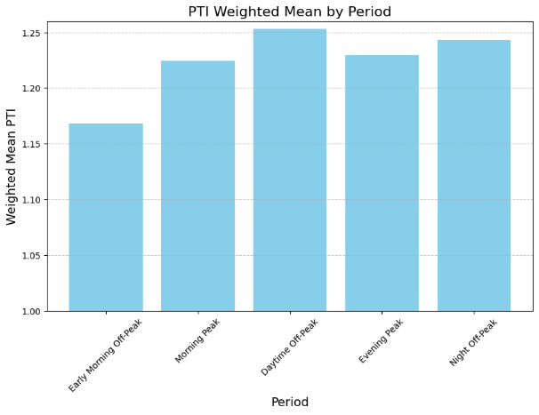
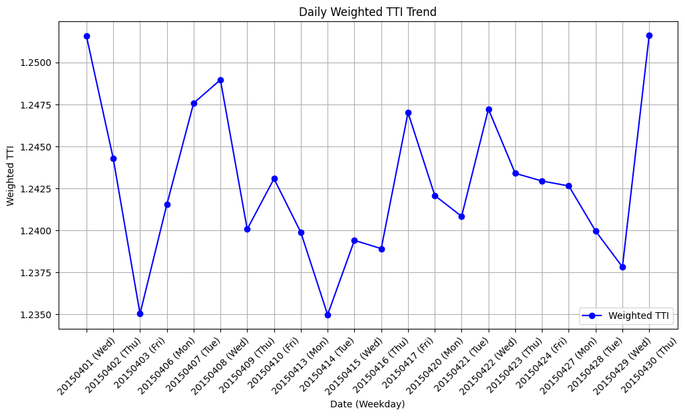
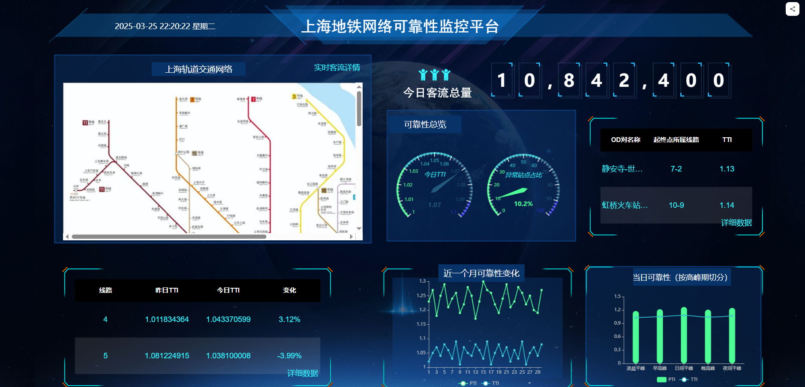

Data-Driven Metro Travel-Time Reliability Assessment
A network-level study of Shanghai Metro origin–destination travel reliability using AFC data, complementary reliability metrics, anomaly detection, regression modeling, temporal pattern analysis, and a manager-facing visualization platform.

How reliable is metro travel at the OD-pair level, and what explains the unreliable tail?
Average travel time alone cannot describe the uncertainty passengers experience. The project therefore evaluated reliability at the origin–destination level, where the same trip can vary because of demand, transfers, operations, and temporal conditions.
The study was organized around two linked tasks: first, construct a multi-metric reliability assessment; second, identify spatial and temporal patterns that explain where and when reliability deteriorates.
The project treats reliability as a distributional property, not a single mean value: dispersion, long-tail behavior, and deviation from free-flow conditions are all represented.
AFC records were transformed into a network-level reliability analysis pipeline.
English reconstruction of the methodological framework in the original Chinese report.
Four indicators describe different parts of the travel-time distribution.
| Metric | Definition used in the project | Main interpretation |
|---|---|---|
| CoV | Coefficient of variation of travel time | Relative dispersion |
| TTI | Mean travel time divided by free-flow travel time (15th percentile) | Shift from low-end / free-flow travel time |
| BTI | Extra time needed relative to the center of the distribution to arrive on time in most trips | Long-tail buffer |
| PTI | 95th-percentile travel time divided by 15th-percentile travel time | Spread between distribution tails |
Spearman rank analysis showed that the four metrics were strongly consistent in how they ordered OD pairs: all reported pairwise correlations exceeded 0.80.
| Pair | Spearman ρ |
|---|---|
| BTI – CoV | 0.8625 |
| BTI – PTI | 0.9361 |
| BTI – TTI | 0.8410 |
| CoV – PTI | 0.9377 |
| CoV – TTI | 0.9265 |
| PTI – TTI | 0.9704 |


Anomaly detection isolates the long tail of unreliable OD pairs.
After computing reliability values for all OD pairs, the project focused on the low-reliability tail. Isolation Forest was used to flag anomalous OD pairs, and t-SNE was used to visualize the resulting separation in a lower-dimensional space.

The study then examined whether unreliable OD pairs shared common attributes, including transfer involvement, passenger volume, central-city location, trip length / free-flow travel time, and station age.
External factors associated with reliability
| External factor | Reported correlation with TTI |
|---|---|
| Free-flow travel time | −0.8804 |
| Passenger volume | 0.7130 |
| Transfer involvement | −0.2596 |
| Central-city location | 0.3318 |
| Origin station age | 0.1690 |
| Destination station age | 0.2213 |
Free-flow travel time and passenger volume emerged as the strongest reported correlates and were used as predictors in the downstream regression model.
The reported test-set mean squared error was 0.00287, with R² = 0.7421.
Reliability also changes by time of day and across dates.
The daily operating period was divided into five intervals: early-morning off-peak, morning peak, daytime off-peak, evening peak, and night off-peak. OD travel counts were used as weights when computing period-level mean PTI.


The result shows that the busiest periods are not automatically the least reliable: denser but more regular service and more stable passenger routines can reduce travel-time dispersion.
The analysis was translated into a management-oriented visualization interface.
To make the reliability analysis usable beyond a research report, the team built a visualization platform from an operator / manager perspective.

I worked on OD-level data analysis, reliability-metric construction, and pattern mining.
My project work included analyzing Shanghai Metro AFC travel data, developing and validating the reliability indicators, and applying anomaly detection and regression methods to identify unreliable OD pairs and the factors associated with them.
Project basis: “数据驱动的地铁网络出行服务可靠性评估与规律挖掘,” Tongji University. English text and captions are editorially restructured from the original Chinese report; quantitative values and figures are preserved.